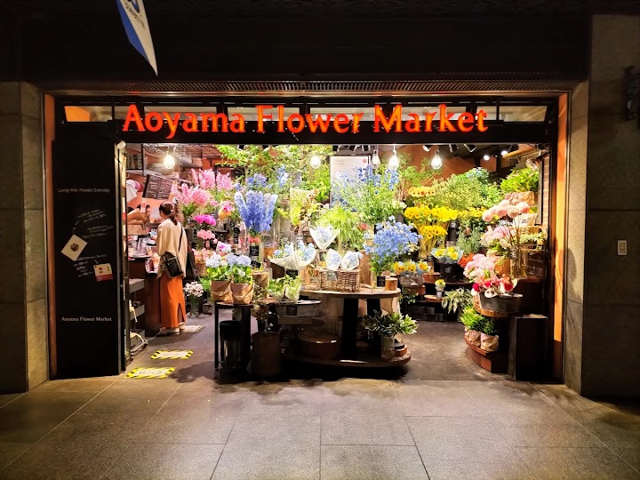
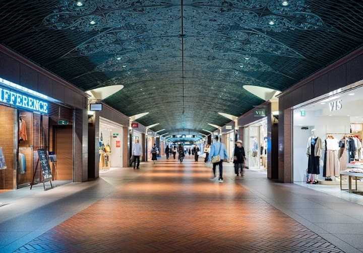
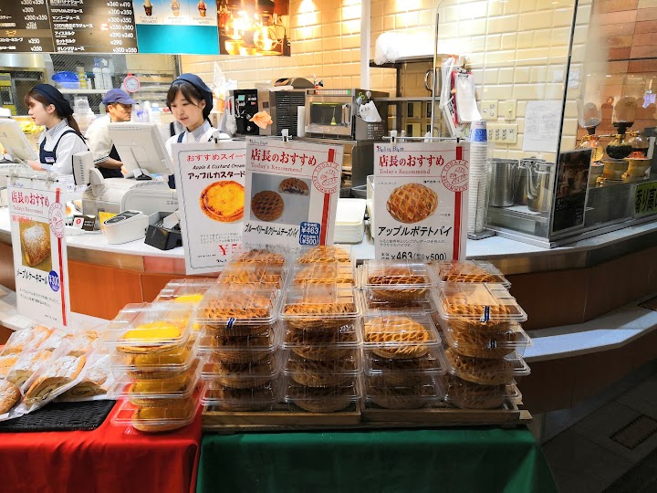
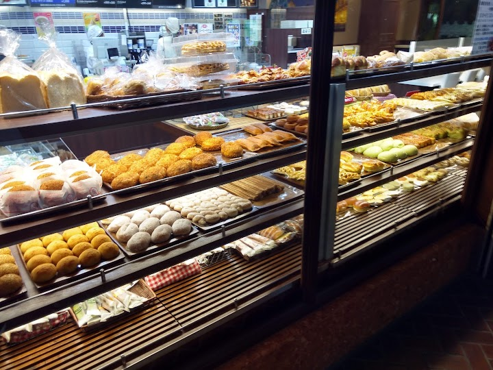
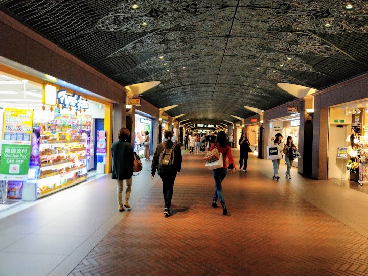
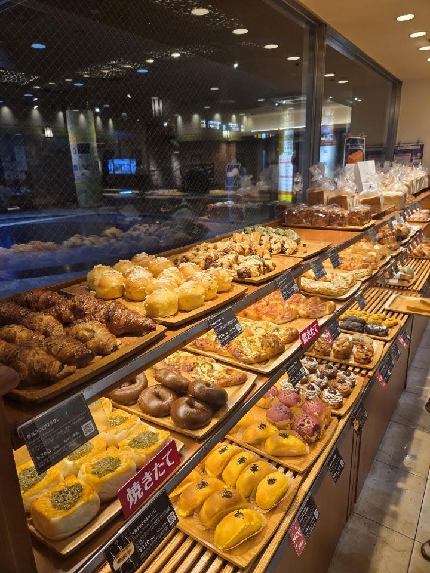

Tenjin Underground Mall (Tenjin Chikagai, shops 10:00-20:00)
Tenjin Chikagai is a sprawling, European-inspired underground shopping centre with 12 avenues of shops and eateries beneath Fukuoka's main shopping district. It feels stylish, like a chic underground street, and is warm in winter.
Open in Google Maps (street view, more photos and reviews there)






Visitor tips on finding it and getting there
Tenjin underground mall is a very nice underground shopping street in Fukuoka. The place is clean, spacious and easy to walk around, especially when the weather outside is hot or raining. I like the atmosphere here because it feels stylish, comfortable and well connected to the subway station. There are many shops, cafes and restaurants around, so it is a good place for shopping, food and just walking around. The design of the walkway also feels unique, with the darker ceiling and warm lighting giving it a different character compared to normal shopping malls. It is also very convenient becau
⭐⭐⭐⭐ Tenjin Underground Mall 🛍️ We visited Tenjin Underground Mall during our trip to Fukuoka, and overall, it was a good experience. Shopping: You’ll find a lot of shops here—from fashion and cosmetics to cafes and souvenirs. Most of the stores are similar to what you’ll see in other shopping areas, but it’s still a nice place to explore. Atmosphere: What I liked the most was the overall design of the mall. It has a classy European-inspired look, and the underground setup gives it a unique feel. It’s clean, spacious, and comfortable to walk around, especially since you’re away from the he
Wide expanse to walk in, everything you need you can find here I lost count of the multiple number of cafes and everyone of their pastries look so tempting and delicious, but alas one has only a stomach to fill that much at each time. Vie de France is one I tried, and the beef broccoli bun is amazing. Guess 'I shall return' then to attempt the other cafes..... This sprawling underground reminds one of the one in Sapporo, but the vibe is different. Here the shops are more upmarket and prices are higher. Just look at the toilets, photos shown here with the European look. Much effort and details